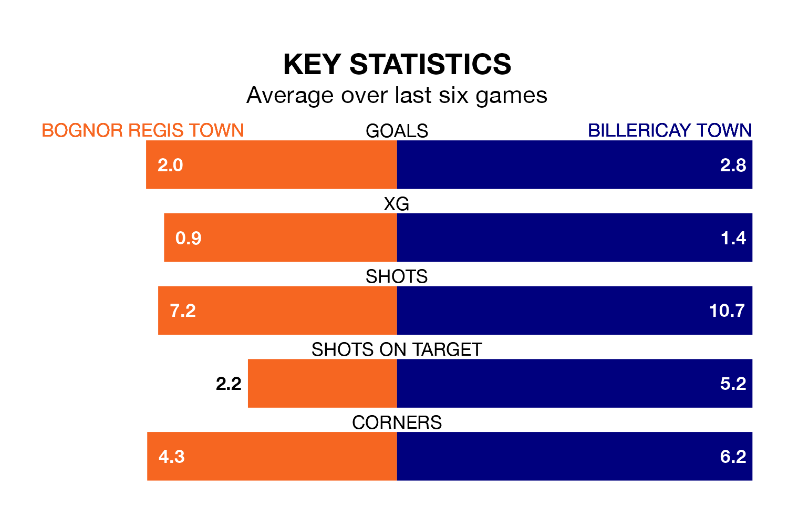

Billericay Town come to Nyewood Lane to play Bognor Regis Town on Saturday in excellent form, having collected 16 points from their last six games.
The visitors have won five and drawn one of their last six fixtures, while Bognor Regis have four wins and a draw.
Billericay are third in the table after 24 games, of which they have won 15 and drawn three, earning 48 points.
Bognor Regis are three places behind Billericay Town in sixth, with 10 wins and nine draws putting them on 39 points.
In the last 10 years, Bognor Regis and Billericay have played each other on 11 occasions. They won five each, and they drew once.
On average, Bognor Regis scored 1.4 goals and Billericay 1.3 in those matches.
Their last meeting was on November 4, when Billericay won 2-1 at home.
With 42 goals in 24 games so far this season, the away side are scoring more than average in the league with 1.8 goals per game. And they are conceding fewer than average, letting in 18 goals at a rate of 0.8 per game.
Bognor Regis Town are also above average scorers, with 1.7 goals per game, compared to a league average of 1.6. They have conceded 1.4 goals per game.
Bognor Regis's last match was on January 20, a 2-0 win against Margate.
Billericay beat Lewes 4-0 last time out, also on January 20.
Updated: 08:51 (UTC), 25/01/24